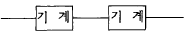
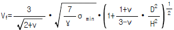
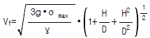
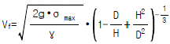
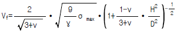

산업안전산업기사 (2003-05-25 기출문제)
1과목: 산업안전관리론
1. 안전사고의 관리적 원인 중 기술적 원인에 해당되지 않는 것은?
- 인원배치 부적당
- 점검, 정비보존 불량
- 생산공정의 부적당
- 구조, 재료의 부적합
(정답률: 70%)

2. 어느 사업장에서 당해년도에 330명의 재해자가 발생하였다. 무상해 사고는 몇 명인가? (단, 하인리히의 법칙을 적용.)
- 29명
- 30명
- 300명
- 329명
(정답률: 63%)
3. 하인리히(H.W.Heinrich)의 안전사고 연쇄성 이론의 5대 요소 중 가장 문제가 되는 것은?
- 사회적 환경결함
- 불안전한 행위 및 상태
- 개인결함
- 안전사고와 재해
(정답률: 72%)
4. 도수율 13.0, 강도율 1.20의 사업장이 있다. 환산도수율은?
- 1.3회
- 3.1회
- 13.0회
- 17.2회
(정답률: 52%)
5. 안전표지에 사용하는 색채 가운데 비상구 및 피난소, 사람 또는 차량의 통행표지에 사용하는 색채는 다음 중 어느 것인가?
- 빨강
- 노랑
- 녹색
- 파랑
(정답률: 86%)
6. STOP 기법의 설명으로 옳은 것은?
- 안전교육의 추진방법
- 관리감독자 안전관찰 훈련
- 위험예지 훈련
- 교육훈련의 평가방법
(정답률: 34%)
7. 작업태도 분석에 의한 동기 파악방법의 연구과정은?
- 요인→ 태도→ 결과
- 태도→ 결과→ 요인
- 결과→ 요인→ 태도
- 태도→ 요인→ 결과
(정답률: 56%)
8. 안전대 부품의 재료로 적당하지 않 은 것은?
- 나일론
- 마
- 폴리에스테르
- 비닐론
(정답률: 56%)
9. 다음 중 안전관리 조직에 해당되지 않 는 것은?
- 직렬조직
- 참모식조직
- 수평조직
- 직렬 및 참모식조직
(정답률: 75%)
10. 무재해 운동의 추진을 위한 3요소에 속하지 않 는 것은?
- 작업조건의 기술적 개선
- 톱(top)의 엄격한 안전경영자세
- 안전활동의 라인(Line)화
- 직장 자주안전활동의 활성화
(정답률: 53%)
11. 안전교육방법 중 실연법의 설명으로 맞는 것은?
- 시설유지비가 적게든다.
- 학생들의 참여가 제약된다.
- 학생들의 사회성이 결여되기 쉽다.
- 다른 방법보다 교사 대 학습자수의 비율이 높다.
(정답률: 50%)
12. Line-Staff의 형식을 가진 안전조직에서 현장의 상태가 안전기준에서 벗어났는가의 여부를 효과적으로 확인할 수있는 부서는?
- Line
- Staff
- 안전보건 관리책임자
- 안전보건 대행기관
(정답률: 29%)
13. 다음 중 안전관리자의 직무가 아 닌 것은?
- 산업재해 발생원인조사 및 대책수립
- 산업재해 보고 및 응급조치
- 안전교육계획 수립 및 실시
- 안전에 관련된 보호구의 구입시 적격품 선정
(정답률: 43%)
14. 슈퍼(Super)의 역할이론 중 역할연기를 올바르게 설명한 것은?
- 인간을 사물에 적응시키는 능력이다.
- 자아탐색인 동시에 자아실현의 수단이다.
- 개인의 역할을 기대하고 감수하는 수단이다.
- 다른 역할을 해내기 위해 다른 일을 구할 때도 있다.
(정답률: 53%)
15. 안전교육 학습지도법의 단계 중 그 순서가 옳게 나열된 것은?
- 준비 ― 교시 ― 연합 ― 총괄 ― 응용
- 준비 ― 연합 ― 교시 ― 응용 ― 총괄
- 총괄 ― 연합 ― 교시 ― 응용 ― 준비
- 응용 ― 준비 ― 연합 ― 총괄 ― 교시
(정답률: 80%)
16. 학습의 전이에 영향을 주는 조건과 관련이 없 는 것은?
- 학습자의 지능 요인
- 학습정도의 요인
- 학습자의 태도 요인
- 학습장소의 요인
(정답률: 62%)
17. 맥그리거(McGregor)의 Y이론과 관계가 없는 것은?
- 직무확장
- 인간관계 관리방식
- 권위주의적 리더쉽
- 책임감과 창조력 있음
(정답률: 73%)
18. 다음 중 바이오리듬의 설명 중 맞는 것은?
- 체온은 주간에 상승, 야간에 감소한다.
- 혈액의 수분량은 주간에 증가, 야간에 감소한다.
- 피로의 자각증상은 주간에 증가, 야간에 감소한다.
- 체중은 주간에 감소, 야간에 증가한다.
(정답률: 55%)
19. 피로에 영향을 주는 기계측의 인자가 아 닌 것은?
- 기계의 색
- 기계의 중량
- 기계의 종류
- 조작부분의 배치
(정답률: 44%)
20. 다음은 사업장에서의 교육훈련의 직접목적에 대한 설명이다. 이에 해당되지 않는 것은?
- 인재육성
- 기업의 계속 유지 발전
- 능률향상
- 인간완성
(정답률: 32%)
2과목: 인간공학 및 시스템안전공학
21. 어떤 기기의 고장율은 0.002/시간으로 일정하다고 할 때 이 기기를 100시간 사용했을 때의 불신뢰도는?
- 0.0020
- 0.1645
- 0.0998
- 0.1813
(정답률: 34%)
22. FMEA 실시를 위한 기본방침의 결정에 있어서 분명하게 해둘 필요가 없는 것은?
- 시스템 운용단계
- 환경 stress 나 동작 stress의 한계 부여
- 시스템의 software 구성요소의 고장 원인
- 시스템 임무의 기본적 목적
(정답률: 45%)
23. 시간-동작연구에 대한 비판으로 맞지 않는 것은?
- 생산량을 저하시키는 방법이다.
- 개인차를 고려하지 못한다.
- 부적절한 표집을 사용한 연구이다.
- 비교적 단순하고 반복적인 직무에만 적절하다.
(정답률: 45%)
24. 바닥의 추천 반사율은?
- 10% - 30%
- 20% - 40%
- 30% - 50%
- 40% - 60%
(정답률: 50%)
25. 인간의 눈은 모든 빛을 동일하게 받아들이는 것 같아 보이지만 실제로는 그렇지 않다. 다음 중 인식범위가 가장 넓은 색상은?
- 백색
- 청색
- 적색
- 녹색
(정답률: 62%)
26. 기계가 갖고 있는 제한점이 아닌 것은?
- 기계는 융통적이지 못하다.
- 기계는 임기응변을 하지 못한다.
- 기계는 물리적 힘을 빠르고 지속적으로 적용하지 못한다.
- 기계는 과거의 경험으로부터 아무런 도움을 얻지 못한다.
(정답률: 80%)
27. 시스템 고장의 치명도를 분석하는 치명도분석(criticality analysis)는 구성부품의 고장형태 및 발생확률로부터 치명도지수(criticality number)를 계산한다. 다음중 시간당 또는 사이클당의 통상 고장률을 나타내는 기호는?
- α
- KE
- KA
- λG
(정답률: 38%)
28. 체계(system)의 특성이 아닌 것은?
- 집합성
- 관련성
- 목적추구성
- 환경독립성
(정답률: 72%)
29. 인간은 계속되는 소음에 장시간 노출되는 경우 청력을 손실하며 소음의 강도와 노출 허용시간은 반비례 하는 것이 일반적이다. 예를 들어 130dB 의 소음은 약 10초가 한계인데 8시간 작업시의 허용소음 기준치는?
- 80dB
- 90dB
- 100dB
- 110dB
(정답률: 33%)
30. 작업장의 소음을 통제하는 일반적인 방법과 거리가 먼 것은?
- 소음의 격리
- 소음원 통제
- 자동화 설비로 교체
- 차폐장치 및 흡음재 사용
(정답률: 78%)
31. 기계의 통제장치 형태 중 개폐에 의한 통제장치는?
- 노브(Knob)
- 토글 스위치(Toggle switch)
- 레버(Lever)
- 크랭크(Crank)
(정답률: 47%)
32. 평균고장시간(MTTF)이 6x1⑤시간인 요소 3개가 직렬계를 이루었을 때의 계(system)의 수명은?
- 2x105시간
- 3x105시간
- 9x105시간
- 18x105시간
(정답률: 41%)
33. 다음과 같은 시스템의 신뢰도를 구하면? (단, 기계의 신뢰도는 0.99이다.)

- 0.9999
- 0.9801
- 1.98
- 0.9701
(정답률: 62%)
34. 체계가 감지, 정보보관, 정보처리 및 의식결정, 행동을 포함한 모든 임무를 수행하는 체계는 다음 중 어느 체계인가?
- 수동체계
- 기계화 체계
- 자동체계
- 반자동 체계
(정답률: 61%)
35. 정보를 음성적으로 의사소통 하는 것이 효과적일 때는 어떤 경우인가?
- 정보가 어렵고 추상적일 때
- 여러종류의 정보를 동시에 제시해야 할 때
- 정보가 긴급할 때(빨리제시)
- 정보의 영구적인 기록이 필요할 때
(정답률: 70%)
36. 시스템의 구상단계에서 시스템 고유의 위험 상태를 식별하고 예상되는 재해의 위험 수준을 결정하는 시스템 안전분석 기법은?
- FTA
- PHA
- FMEA
- ETA
(정답률: 44%)
37. 작업설계를 함에 있어서 작업 만족도를 얻기 위한 수단이 아닌 것은?
- 작업순환
- 작업분석
- 작업 윤택화
- 작업확대
(정답률: 24%)
38. 다음 조도를 나타낸 공식이다. 알맞는 것은?
- 광도 ÷ 거리
- (광도)2÷ 거리
- (거리)2÷ 거리
- 광도 ÷ (거리)2
(정답률: 56%)
39. 작업자의 요구나 관심이 한 가지에 집중되는 의식우회의 문제를 지닌 작업자에 대한 감독자의 적절한 조치는?
- 규제
- 통제
- 카운셀링(counseling)
- 처벌
(정답률: 62%)
40. 다음 중 진동의 영향을 가장 많이 받는 인간 성능은?
- 추적(tracking) 작업
- 감시(monitoring) 작업
- 반응시간
- 형태식별(pattern recognition)
(정답률: 34%)
3과목: 기계위험방지기술
41. 30A 미만의 아크용접과 아크절단 등에 사용하는 필터유리의 차광도 번호는?
- 6∼7
- 8∼9
- 10∼12
- 13∼14
(정답률: 38%)
42. 크레인 작업시 2ton의 중량을 걸어 20m/s2 가속도로 감아올릴 때 로프에 걸리는 총 하중은?
- 5,998kg
- 6,000kg
- 6,082kg
- 6,112kg
(정답률: 50%)
43. 지게차의 전후 안정도를 유지하기 위해서는 과적을 삼가해야 하는데 전후의 무게중심은 어디에 두는 것이 가장 좋은가?
- 화물의 중심
- 앞바퀴 중심
- 지게차 전장의 중량
- 마스트의 중심선
(정답률: 43%)
44. 사출성형기, 주형조형기, 형단조기 등에 근로자의 신체의 일부가 말려들어갈 우려가 있을 때 가장 적합한 안전장치는?
- 광전자식
- 덮개 또는 울
- 손쳐내기식 및 수인식
- 게이트 가드 또는 양수조작식
(정답률: 31%)
45. 선반 작업에 대한 안전수칙으로 틀린 것은?
- 척 렌치는 반드시 척에 끼워둔다.
- 베드상에 공구를 올려놓지 말아야 한다.
- 바이트는 가급적 짧게 장치한다.
- 작업시 기계 점검을 한 후 작업한다.
(정답률: 70%)
46. 최대응력설에 의한 숫돌의 파괴속도(Vf)로 알맞은 것은?(단, H:숫돌의 내경, D:숫돌의 외경, ν :숫돌의 포아송비, γ :숫돌의 비중, σmax:숫돌의 최대인장강도 임.)




(정답률: 22%)
47. 회전축, 치차, 풀리, 플라이휠 등에는 어떤 고정구를 설치하여야 하는가?
- 묻힘형 고정구
- 돌출형 고정구
- 개방형 고정구
- 폐쇄형 고정구
(정답률: 56%)
48. 광전자식 안전장치의 투광기 및 수광기의 광축의 수는?
- 1개 이상
- 2개 이상
- 3개 이상
- 4개 이상
(정답률: 52%)
49. 드릴의 직경이 6mm 이고 회전수가 1000 RPM 일 때의 절삭속도는?
- 6.3m/min
- 12.6m/min
- 18.8m/min
- 25.1m/min
(정답률: 56%)
50. 기능적 안전화를 위하여 1차적으로 고려할 사항은?
- 강도계산
- 페일세이프티(fail safety)
- 점검수리
- 방호장치 및 가이드(guard)
(정답률: 47%)
51. 재료강도 시험 중 항복점을 알 수 있는 시험은?
- 인장시험
- 충격시험
- 압축시험
- 마모시험
(정답률: 62%)
52. 가스용접 작업의 안전수칙 중 틀 린 것은?
- 용접하기 전에 반드시 소화기, 소화수의 위치를 확인 할 것
- 보호안경을 반드시 쓸 것
- 아세틸렌의 사용압력을 1.3㎏/cm2이하로 할 것
- 작업 후에는 아세틸렌 밸브를 먼저 닫고 산소 밸브를 닫을 것
(정답률: 58%)
53. 유압리프트(lift)의 방호장치로 다음 중 가장 적당한 것은?
- 역화방지장치
- 권과방지장치
- 반발방지장치
- 압력방출장치
(정답률: 47%)
54. 셰이퍼(Shaper)에서 바이트를 어떻게 물리는 것이 가장 안전한 작업을 할 수 있는가?
- 바이트를 길게 나오도록 한다.
- 가능한 범위내에서 짧게 고정하고, 날끝은 샹크의 뒷면과 일직선상에 있게 한다.
- 가능한 범위내에서 짧게 고정하고 날끝은 샹크의 뒷면보다 앞에 있도록 한다.
- 측면을 절삭할 때는 수직으로 바이트를 고정해야 한다.
(정답률: 47%)
55. 플레이너(planer)작업시의 안전대책이 아닌 것은?
- 칩브레이크 부착용 바이트를 사용하여 칩이 짧게 되도록 한다.
- 프레임내의 피트(pit)에는 뚜껑을 설치한다.
- 바이트는 되도록 짧게 나오도록 설치한다.
- 베드위에 다른 물건을 올려놓지 않는다.
(정답률: 40%)
56. 프레스의 감응식 방호장치에서 손이 광선을 차단한 직후부터 급정지 장치가 작동을 개시한 시간이 0.03초이고, 급정지 장치가 작동을 시작하여 슬라이드가 정지한 때까지의 시간이 0.2초이면 광축의 설치거리는?
- 153mm 이상
- 279mm 이상
- 368mm 이상
- 451mm 이상
(정답률: 49%)
57. 다음 중 금형의 안전화 조치와 거리가 먼 것은?
- 펀치의 세장비가 맞지 않으면 길이를 짧게 조정한다.
- 강도 부족으로 파손되는 경우 충분한 강도를 갖는 재료로 교체한다.
- 열처리 불량으로 인한 파손을 막기 위해 Quenching을 실시한다.
- 캠 및 기타 충격이 반복해서 가해지는 부분에는 완충장치를 한다.
(정답률: 52%)
58. 동력식 수동대패기계의 덮개 하단과 테이블 간격은 얼마 이내가 적당한가?
- 3mm
- 5mm
- 8mm
- 12mm
(정답률: 37%)
59. 다음 중 벨트 컨베이어의 특징에 해당되지 않 는 것은?
- 무인화 작업이 가능하다.
- 연속적으로 물건을 운반할 수 있다.
- 운반과 동시에 하역작업이 가능하다.
- 경사각이 큰 경우에도 쉽게 물건을 운반할 수 있다.
(정답률: 67%)
60. 지게차의 중량물 표시는 어디에 하는가?
- 화물옆면
- 화물앞면
- 화물뒷면
- 작업자에게 잘 보이는 곳
(정답률: 55%)
4과목: 전기 및 화학설비위험방지기술
61. 화학공정의 반응을 시키기 위한 조작 조건에 해당되지 않는 것은?
- 반응온도
- 반응농도
- 반응높이
- 반응압력
(정답률: 69%)
62. 정전작업중 조치사항에 해당하지 않는 것은?
- 잔류전하의 방전
- 개폐기의 관리
- 단락접지의 수시확인
- 작업지휘자에 의한 지휘
(정답률: 27%)
63. 보일러에서 고온· 고압의 열수를 밖으로 배출하는 밸브를 갑자기 개방할 때 일어나는 직접적인 위험성은?
- 보일러의 감압폭발
- 증기폭발
- 보일러의 급격한 압력상승
- 보일러의 급격한 온도상승
(정답률: 40%)
64. 변압기의 부싱사고나 내부고장을 예방하려면 어떤 보호계전 방식을 선택하는가?
- 과전류계전방식
- 차동계전방식
- 과전압계전방식
- 부흐홀쯔계전방식
(정답률: 37%)
65. 폭발 및 연소 위험성의 척도로 쓰일 수 있는 것 중 가장 적합한 것은?
- 증기압
- 폭발범위
- 발화온도
- 분해온도
(정답률: 57%)
66. 산화성물질을 가연물과 혼합할 경우 혼합위험성 물질이 된다. 그 이유로 가장 적당한 것은?
- 산화성물질과 가연물이 혼합되어 있으면 가열· 마찰·충격 등의 점화에너지원에 의해 더욱 쉽게 분해하기 때문이다.
- 산화성물질이 가연성물질이 혼합되어 있으면 주수소화가 어렵기 때문이다.
- 산화성물질이 가연성물질과 혼합되어 있으면 산화·환원반응이 더욱 잘 일어나기 때문이다.
- 산화성물질에 조해성이 생기기 때문이다.
(정답률: 58%)
67. SO2 20ppm을 g/m3로 환산하면 얼마인가? (단, 온도는 20℃, 압력은 1기압으로 한다.)
- 0.571
- 0.533
- 0.⑤71
- 0.⑤33
(정답률: 27%)
68. 60[Hz]의 가정용 교류일 경우 인체가 감전되어 전격의 고통은 이겨낼 수 있는 전류값[mA]은?
- 7-8
- 50-55
- 100-150
- 1000-1100
(정답률: 43%)
69. 산소용기의 압력계가 100kg/cm2였다. 몇 [psia]인가? (단, 대기압은 표준대기압이다.)
- 1465
- 1455
- 1438
- 1423
(정답률: 35%)
70. 저압방폭설비에 필요한 전선관을 상호 접속시에는 유니온 카플링을 사용하여 최소한 몇 산이상 유효하게 접속하여야 하는가?
- 3산
- 4산
- 5산
- 7산
(정답률: 39%)
71. 고압의 O2를 공급하는 파이프가 있다. O2가스 봄베의 밸브를 급격하게 열었더니 파이프의 이음새부분에서 불길이 치솟았다. 이 경우 예상할 수 있는 점화원은 무엇인가?
- 충격
- 마찰
- 단열압축
- 정전기방전
(정답률: 48%)
72. 정전기 발생원인에 맞지 않는 것은?
- 마찰대전
- 충돌대전
- 파괴대전
- 유체대전
(정답률: 36%)
73. 전기화재중 발화원에 대한 화재예방대책이 아닌 것은?
- 배선기구는 정격전압, 전류범위에서 사용
- 전기기기 및 장치의 올바른 사용
- 전기배선(코드)의 올바른 사용
- 이동전선에 대한 관리철저
(정답률: 41%)
74. 물체간의 마찰로 인하여 발생된 정전기가 방전되지 못하고 축적되는 물질은?
- 철
- 구리
- 경질유
- 증류수
(정답률: 34%)
75. 어떤 위험물을 위험물 저장소에 보관하던 도중에 빗물이 스며들자 불꽃이 일어나면서 창고가 폭발하였다. 다음 중 어느 위험물이 저장된 것으로 판단되는가?
- 과염소산 나트륨
- 나트륨
- T.N.T.
- 피크린산
(정답률: 47%)
76. 배전선로용 피뢰기는 방전캡과 특성요소로써 구성이 되어 있다. 다음 어느 것을 차단하는 특성을 가지고 있는가?
- 단절
- 용단
- 속류
- 방전
(정답률: 31%)
77. 다음 중 점화원이 될 수 있는 것은?
- 혼합열
- 기화열
- 융해열
- 증발열
(정답률: 33%)
78. 다음 중 자연발화에 대한 설명이 옳은 것은 어느 것인가?
- 점화원을 잘 관리하면 자연발화를 방지할 수 있다.
- 자연발화는 밖으로 방열하는 열보다 내부에서 발생하는 열의 양이 많아 일어난다.
- 습도를 높게 하면 자연발화를 방지하기가 더 좋다.
- 윤활유를 닦은 걸레를 담는 용기는 금속재보다는 플라스틱제품이 자연발화를 방지하기가 더 좋다.
(정답률: 46%)
79. 위험지역 O종장소에서 사용될 수 있는 본질구조로서 적합한 것은?
- 안전증 방폭구조
- 내압 방폭구조
- 본질안전 방폭구조
- 유압 방폭구조
(정답률: 52%)
80. 가연성 가스가 밀폐된 용기 내에서 폭발할 때 최대폭발압력에 영향을 주는 인자가 아닌 것은?
- 가연성가스의 초기압력
- 가연성가스의 초기농도
- 가연성가스의 온도
- 가연성가스의 유량
(정답률: 46%)
5과목: 건설안전기술
81. 달비계의 최대적재하중을 정함에 있어 안전계수로 틀린것은?
- 달기와이어로프 및 달기강선의 안전계수는 7이상
- 달기체인 및 달기후크의 안전계수는 5이상
- 달기강대와 달비계의 하부 및 상부지점의 안전계수는 강재의 경우 2.5이상
- 달기강대와 달비계의 하부 및 상부지점의 안전계수는 목재의 경우 5이상
(정답률: 50%)
82. 거푸집 해체 작업시의 안전수칙과 거리가 먼 것은?
- 거푸집지보공을 해체할 때는 작업책임자를 선임한다.
- 해체된 거푸집 재료를 올리거나 내릴 때는 달줄이나 달포대를 사용한다.
- 보 밑 또는 슬라브 거푸집을 해체 할 때는 동시에 해체하여야 한다.
- 거푸집의 해체가 곤란한 경우 구조체에 무리한 충격이나 지렛대 사용은 금하여야 한다.
(정답률: 70%)
83. 기존 건물에서 인접된 장소에서 새로운 깊은 기초를 시공하고자 한다. 이때 기존 건물의 기초가 얕아 안전상 보강하려고 할 때 적당한 것은?
- 압성토 공법
- 언더피닝 공법
- 선행 재하공법
- 치환공법
(정답률: 42%)
84. 철골구조물의 건립 순서를 계획할 때 일반적인 주의사항이 아닌 것은?
- 현장건립 순서와 공장제작 순서를 일치시킨다.
- 건립기계의 작업반경에 방해되지 않도록 한다.
- 건립 중 가볼트 체결은 가급적 많이 하여 안정을 기한다.
- 기둥은 2본 이상 세울 때는 반드시 계속하여 보를 설치한다.
(정답률: 65%)
85. 옹벽의 안정기준에서 활동에 대하여 안전하기 위하여서는 활동에 대한 저항력이 수평력보다 몇 배 이상되어야 하는가?
- 1.0배
- 1.5배
- 2.0배
- 3.0배
(정답률: 56%)
86. 유해위험 방지계획서 작성 대상이 아닌 것은?
- 지상높이 31m 이상인 건축물 공사
- 제방높이 30m 이상인 댐 건설공사
- 최대지간길이 50m 이상인 교량공사
- 굴착깊이 10.5m 이상인 굴착공사
(정답률: 43%)
87. 흙막이 동바리를 설치할 때 붕괴 등의 위험방지를 위한 정기점검사항으로 틀린 것은?
- 침하의 정도
- 버팀대의 긴압의 정도
- 형상· 지질 및 지층의 상태
- 부재의 손상· 변형· 부식· 변위 및 탈락의 유무
(정답률: 29%)
88. 이동식 사다리의 구조기준을 잘못 설명한 것은?
- 견고한 구조로 할 것
- 재료는 심한 손상, 부식 등이 없는 것으로 할 것
- 각부에서 미끄럼방지 장치 등 전위 방지조치를 할 것
- 폭은 60cm 이내로 할 것
(정답률: 74%)
89. 다음은 압밀에 대한 설명이다. 옳지 않은 것은?
- 압밀이란 흙의 간극 속에서 물이 배수됨으로써 오랜 시간에 걸쳐 압축되는 현상을 말한다.
- 압밀시험의 목적은 지반의 침하 속도와 침하량을 추정해서 설계 시공의 자료를 얻는 데 있다.
- 일반적으로 점토는 투수계수가 작아 압밀을 장시간에 걸쳐 일어나나, 간극비가 작아 침하량은 작다.
- 압밀이 완료되면 과잉간극수압(Ue)은 0 이 된다.
(정답률: 46%)
90. 콘크리트가 분리되는 일이 없이 거푸집속에 쉽게 타설할 수 있는 정도를 나타내는 것은?
- workability
- bleeding
- consistency
- filtration
(정답률: 49%)
91. 건설 공사중 임시분전반의 안전조치 불량으로 감전 재해가 발생하면 중대 재해로 이어질 수 있다. 다음 중 임시 분전반의 안전 조치 사항으로 틀린 것은?
- 전기사용장소에는 임시 분전반을 설치하여 반드시 콘센트에서 플러그로 전원을 인출해야 한다.
- 분기회로에는 감전보호용 지락만 설치하면 누전차단기는 설치하지 않아도 된다.
- 충전부가 노출되지 않도록 내부보호판을 설치하고 콘센트에 100V, 220V 등의 전압을 표시해야 한다.
- 철재분전함의 외함은 반드시 접지 시켜야 한다.
(정답률: 74%)
92. 철골 건립작업을 중지하여야 할 강풍의 기준사항은?
- 1분간 평균 풍속이 10m/s 이상
- 10분간 평균 풍속이 10m/s 이상
- 1분간 평균 풍속이 20m/s 이상
- 10분간 평균 풍속이 20m/s 이상
(정답률: 28%)
93. 굴착공사에 사용되는 흙막이공법의 종류와 거리가 먼 것은?
- 어스앵카공법
- 자립흙막이공법
- 아일랜드공법
- 자연사면굴착공법
(정답률: 27%)
94. 이동식 비계를 조립하여 작업할 때 준수 사항으로 틀린 것은?
- 최대 적재하중 명시
- 승강용 사다리를 견고하게 설치
- 이동을 방지하기 위한 제동장치 생략 가능
- 비계의 최상부 작업시 표준안전난간대 설치
(정답률: 75%)
95. 높이 2m인 거푸집에서 콘크리트 측압은 얼마인가? (단, 콘크리트 단위중량=2.4tonf/m3)
- 2.4tonf/m2
- 4.8tonf/m2
- 9.6tonf/m2
- 12.5tonf/m2
(정답률: 65%)
96. 다음중 굴착기의 전부장치의 구성 종류가 아닌 것은?
- 붐(Boom)
- 암(Arm)
- 버킷(Bucket)
- 블레이드(Blade)
(정답률: 55%)
97. 흙의 안식각은 어느각을 말하는가?
- 자연경사각
- 비탈면각
- 시공경사각
- 계획경사각
(정답률: 50%)
98. 가설공사에서 동력을 사용할 때의 기술 중 틀린 것은?
- 동력은 전동기 또는 내연기관이 많이 쓰인다.
- 전력에 관한 사항은 전력회사 방침에 따라야 한다.
- 동력을 사용할 때는 변압기, 변전실, 배전반 등을 전문업자의 시공으로 설비해야 한다.
- 전력은 임시 가설이므로 현장원이 가설할 수 있다.
(정답률: 73%)
99. 다음 중 항타기, 항발기의 권상용 와이어로우프로 사용 가능한 것은?
- 이음매가 있는 것
- 와이어로우프의 한 가닥에서 소선의 수가 8퍼센트 절단 된 것
- 지름의 감소가 공침지름의 8퍼센트 인 것
- 심하게 변형 또는 부식 등이 있는 것
(정답률: 44%)
100. 다음 나열된 내용은 강관비계의 조립시 안전지침이다. 이 중 잘못된 것은?
- 비계기둥의 간격은 보 방향에서 2m, 장선 방향에서 2m 이상이어야 한다.
- 지상에서 첫 번째 띠장의 높이는 2m 이하의 위치에 설치해야 한다.
- 비계기둥간의 적재하중은 400kg을 초과하지 않도록 해야 한다.
- 벽면과의 연결은 수직 5m, 수평 5m 이내마다 견고하게 설치해야 한다.
(정답률: 27%)